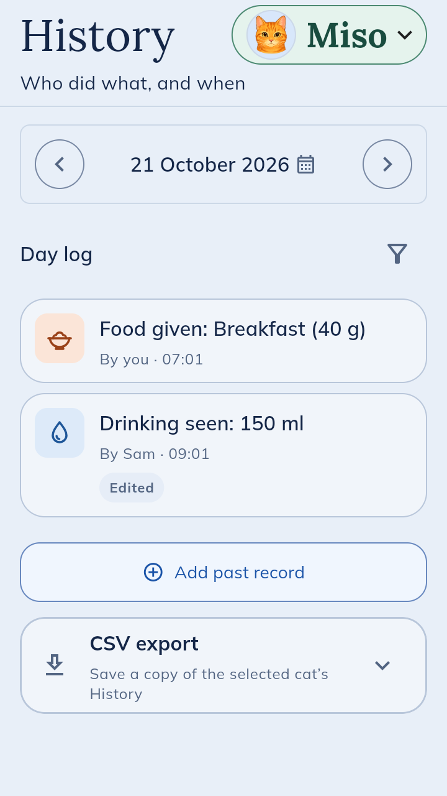

Keep track of your cat’s care, together
Record the everyday things, see what’s due, and know what someone else has already done.
Collecting requests for free Android early access. I’ll confirm yours within a day, and email everyone when invitations go out.
A short Google Form, no sign-in needed. For ages 16+ with an Android phone, in the UK, US, Canada or Australia. Prefer email? Write to me instead.


Why I’m making OurCat
Hello, I’m the person building OurCat, and this is Tokyo.
Looking after Tokyo comes with more to remember than you’d think: vet visits, the odd course of medicine, what’s been eaten, and weigh-ins to keep an eye on.
Then Tokyo had an accident, and I needed the vet’s and the emergency vet’s details as quickly as possible. That’s not the moment to go hunting for a phone number.
When friends look after Tokyo, all of that needs passing on. And my partner and I need to be on the same page: has breakfast happened? Has the medicine been given?
So I’m building OurCat: one place to keep it all, and to share it with the people who help.

What it looks like day to day
Breakfast, 08:05
Your partner feeds the cat and taps Log. At work, you can see it’s done, and by whom.
A weekend away
A friend is cat-sitting. Give them access that ends when you choose, so they can see the routine and record what they do.
At the vet
Weight, medicine and past visits are in History, and the vet’s number is in Care info, ready when you need it.
You can use OurCat on your own, too. Sharing is there when someone else helps.
Want to help shape it?
Try what interests you, then tell me what helped and what got in the way. A sentence or two is plenty.
OurCat keeps records; it doesn’t give veterinary advice or monitor your cat. Keep your usual arrangements for anything urgent.